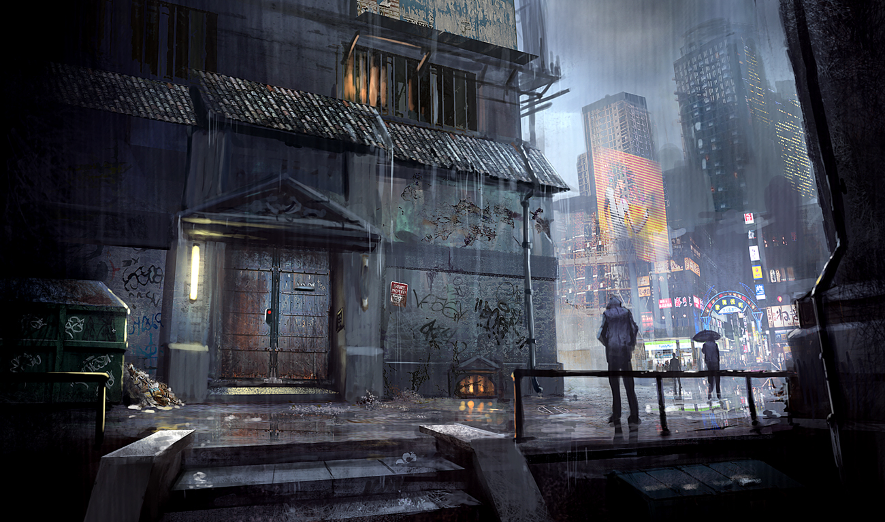
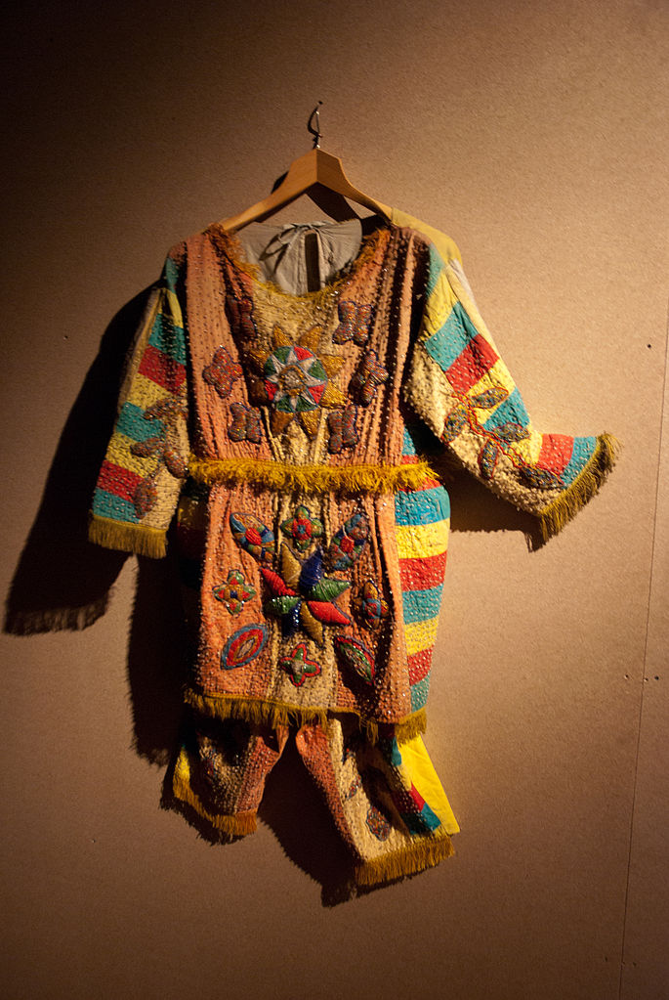

Mito e ficção
Mitos ao longo da história inspiraram não apenas obras de arte visual, mas também a criação de novas histórias. Na aula de hoje, vamos discutir diferentes questões envolvidas nesse processo, buscando relacionar esses diferentes aspectos com alguns exemplos e com conceitos que podem ser úteis quando criamos novas histórias, mundos ficcionais e jogos.
Sumário
- Abordagens
- Proximidade e exploração temática
- Frankenstein, ou o Prometeu moderno, de Mary Shelley
- Colagem e apropriação cultural em mundos ficcionais
- Divindades do vodu haitiano em Count Zero de William Gibson
- Relato mítico como gênero narrativo
- A cosmogonia em O Silmarillion, de Tolkien
- Proximidade e exploração temática
- Referências
Abordagens
Proximidade e exploração temática
Nesse processo, a obra ficcional discute e aprofunda, em um novo contexto, temas centrais para um relato mitológico. Esses temas não são apenas revisitados, mas trazidos à tona e reatualizados em relação ao contexto contemporâneo da obra. De certa forma, todo processo criativo inspirado em uma obra mitológica faz isso, mas a profundidade e relevância da nova obra varia. Quando ela “acerta”, a temática explorada se expande e essa obra pode assumir um papel cultural marcante.
Frankenstein, ou o Prometeu moderno, de Mary Shelley
Por que esse nome?
Em algumas versões do mito (especialmente romanas), Prometeu criou o homem a partir da argila, e essa é a versão adotada por Mary Shelley. Nessa versão, por terem ajudado os deuses do Olimpo a derrotar os outros titãs, os irmãos Prometeu e Epimeteu recebem a tarefa de criar os homens. Epimeteu deveria ter dado poder físico aos homens, mas como ele não consegue premeditar suas ações, os humanos ficam sem dons. Daí prometeu dá a eles a inteligência que os permite sobreviver e Atena sopra a vida nessa criação.
Na história de Frankenstein, a criação da criatura e o conflito dela com seu criador se relaciona com o erro de Victor de romper as condições humanas de mortalidade. O labor é transformado em trabalho, o papel da mulher no nascimento e na condição humana, o tema da paternidade problemática, tudo isso termina por motivar uma punição moral ao criador.

Frontispício, edição inglesa de 1831.
A ficção reatualiza a questão da técnica e da ciência como presentes ambíguos à humanidade. O abuso aos presentes de Prometeu (ciência, técnica, trabalho) é apresentado num contexto de desencantamento com um racionalismo desconectado do pensamento moral e ético. É uma história que apresenta uma perspectiva pessimista sobre esse racionalismo, além de deixar fortemente marcada a falta de controle do indivíduo sobre a história e como esse racionalismo não acontece num vácuo.
Colagem e apropriação cultural em mundos ficcionais
Em outras obras, o que vemos é uma colagem, o uso de elementos de culturas e mitologias diferentes daquela dos autores. Esse tipo de abordagem é chamado de apropriação cultural e é bastante complexo. Outra palavra chave para pensar esse processo é a ideia de difusão trans-cultural.
Nesse tipo de processo, o significado original desses elementos reapropriados é muitas vezes perdido ou descontextualido de forma desrespeitosa ou até mesmo profanadora. Como o autor não é participante daquela cultura, é incapaz de compreender todas as nuances e problemas que aquela representação pode causar. Além disso, dependendo de como a obra ficcional está situada, ela pode perpetuar preconceitos e opressões ou simplesmente se beneficiar das criações de um povo oprimido sem retribuir de qualquer forma significativa.
Ao mesmo tempo, o processo de mistura de culturas e difusão de elementos de diferentes origens acontece constantemente e constrói visibilidade e diversidade para na cultura em questão. Quando pensamos na mídia, essa necessidade de diversidade é patente e muitas vezes uma etapa inicial desse processo envolve apropriações culturais, para depois envolver o espaço para criadores das “outras” culturas em questão. O que deve ser pensado é: como esse processo vai acontecer? Quem são os beneficiados? Quem tem voz no processo?
Uma forma de entender isso, apresentada por Nisi Shawl (autora de ficção especulativa), é através da metáfora do autor como “invasor”, “turista” ou “hóspede”.
Invasores chegam sem aviso, pegam aquilo que querem usar de qualquer maneira que acharem adequado. Destroem sem pensar aquilo que lhes parece sem valor. Ficam o tempo que querem, saem à sua própria conveniência. A sua posição é de privilégio sem compromisso.
Turistas são esperados. São geralmente um incômodo, mas pelo menos pagam pelo que causam. Podem ser acomodados, podem ser ignorantes, mas podem também ser inteligentes e, portanto, abertos a serem educados.
Hóspedes são convidados. Suas relações com seus anfitriões podem se tornar de longo prazo e são frequentemente reciprocas. - Nisi Shawl
É importante lembrar que essa é uma simplificação para facilitar o entendimento de algumas questões relevantes associadas à apropriação cultural. A questão de “pagamento” em particular é bastante complexa e claro que um mesmo autor ou criador pode em vários momentos estar em categorias bem diferentes
Divindades do vodu haitiano em Count Zero de William Gibson

Entrada do Leon’s Bar em Count Zero. Ilustração de Gray Rogers.
No livro Count Zero, Gibson apresenta três histórias que se passam num futuro cyberpunk, onde tecnologia e interconexão são dominantes na sociedade. Longe de ser uma utopia ou distopia simplista, vemos uma sociedade caótica e dividida, com uma multiplicidade de subculturas e grupos em constante interação. Nesse mundo ficcional, um tipo de ciberespaço disputado por hackers e corporações é chave para a história. No livro, entidades, de estatuto ambíguo (não se sabe se divinos ou não), surgem e começam a se comunicar com pessoas conectadas, assumindo a forma de divindades do vodu haitiano como Legba e Baron Samedi, aproveitando-se dos rituais e da cultura e religião já existente. Aos poucos, revela-se que são diferentes inteligências artificiais que assumiram consciência e tem poderes quase ilimitados dentro desse mundo interconectado.
A temática discutida é uma de estatuto, o que são e como seriam tratadas essas entidades? No meio de um universo misterioso, onde entender o papel do indivíduo não é trivial, essas divindades assumem uma forma conhecida para facilitar seu contato com os humanos. A inteligência artificial é um mistério constituinte desse mundo ficcional, mas conectado às tradições e modos de entendimento do mundo contemporâneo e tradicional. Count Zero usa esse elemento de forma central em sua trama como marcador da contemporaneidade como diversa e de difícil compreensão, aspecto importante das obras da trilogia sprawl de Gibson.

Roupa cerimonial de vodu haitiano, Museu Etnológico de Berlim.
Este é claramente um caso de apropriação cultural que busca discutir e apresentar um tema a partir de elementos culturais de culturas alheias ao autor (Gibson é americano-canadense, branco, do norte do país, sem contato direto com a cultura do vodu haitiano). A chave aqui é discutir a questão da apropriação cultural da cultura afro-caribenha: quais problemas ou questões podem ser levantadas em relação a essa representação da religião do vodu?
Um aspecto a ser considerado é a questão da alteridade: como essa história constrói um outro em oposição à cultura branca dominante? A história questiona ou reafirma clichês utilizados na repressão a esses grupos? A representação na obra em questão parece ser bem informada e não busca passar julgamentos sobre o vodu, mas apresenta sim um recorte específico que pode ser problemático, inclusive desconstruindo e reinventando uma prática religiosa. Essa desconstrução é ambígua, pois ao mesmo tempo que recorta uma prática religiosa que foi historicamente representada de forma negativa e reprimida, também ajuda, ao não repetir os clichês desse tipo de representação, a construir uma imagem mais complexa da mesma.
É difícil como leitor distanciado navegar esse tipo de processo e colagem, portanto é fundamental tomar essa apropriação de forma refletida. Para a autora afro-americana Nisi Shawl, por exemplo, é uma obra que apresenta o vodu de uma forma realista e relevante, de forma central à trama e com alguma profundidade. No entanto, para saber mais sobre como essa representação foi recebida por praticantes da cultura, teríamos que estabelecer um diálogo direto. Tratar de uma cultura viva sempre implica em ouvir seus membros, em respeitar suas vontades e aprender com suas experiências, contribuindo para aquela cultura e não apenas se aproveitando dela. Essa preocupação envolve todas as etapas de criação e toda a equipe envolvida.
Relato mítico como gênero narrativo
Uma outra abordagem para o uso da mitologia dentro de textos ficcionais é a ideia da criação de uma mitologia própria, como forma de embasar as histórias desse texto ou então para construir uma sensação de mundo mais compreensível e crível. Esse tipo de abordagem é bastante influente e utilizada em obras de fantasia, e parte dessa influência vem do trabalho de J. R. R. Tolkien.
A cosmogonia em O Silmarillion, de Tolkien
No livro O Silmarillion, Tolkien relata histórias de eras antigas da Terra-Média. Entre elas, encontramos uma cosmogonia, o Ainulindalë. Nesse relato, Tolkien descreve a criação do universo da Terra-Média, assim como seu panteão e tensões futuras.
Vamos ler um pequeno trecho em sala para depois discutir as seguintes perguntas:
- Quais paralelos vocês enxergam com outras cosmogonias pesquisadas e discutidas?
- Quais elementos do texto o fazem parecer “mítico”?
- Como esses elementos aparecem em outros relatos que já lemos anteriormente?
Referências
SHAWL, N. Appropriate Cultural Appropriation. Disponível em: http://irosf.com/q/zine/article/10087. Acesso em: 29 mar. 2017.